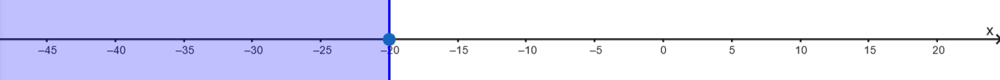
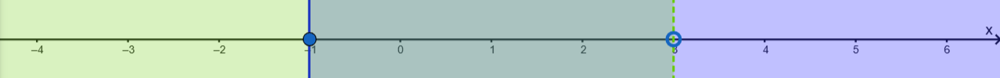

1 Ανισώσεις α βαθμού
Οι ανισώσεις α’ βαθμού με μία μεταβλητή αποτελούν ένα θεμελιώδες κεφάλαιο των Μαθηματικών, που μας επιτρέπει να συγκρίνουμε αλγεβρικές παραστάσεις και να προσδιορίζουμε το σύνολο των τιμών που τις επαληθεύουν.
1.1 1. Θεωρία Ανισώσεων
1.1.1 Βασικοί Ορισμοί
- Ανίσωση ονομάζεται μια σχέση ανισότητας (χρησιμοποιώντας τα σύμβολα \(<, >, \leq, \geq\)) που περιέχει μια μεταβλητή (συνήθως το \(x\)).
- Λύση μιας ανίσωσης είναι κάθε τιμή της μεταβλητής που την επαληθεύει. Σε αντίθεση με τις εξισώσεις, μια ανίσωση έχει συνήθως άπειρες λύσεις, οι οποίες αποτελούν ένα σύνολο.
1.1.2 Ιδιότητες της Ανισότητας
Για να λύσουμε μια ανίσωση, χρησιμοποιούμε τις παρακάτω βασικές ιδιότητες:
1. Πρόσθεση/Αφαίρεση: Αν προσθέσουμε ή αφαιρέσουμε τον ίδιο αριθμό και στα δύο μέλη μιας ανίσωσης, προκύπτει μια νέα ανίσωση με την ίδια φορά.
* Αν \(\alpha < \beta\), τότε \(\alpha \pm \gamma < \beta \pm \gamma\).
2. Πολλαπλασιασμός/Διαίρεση με θετικό αριθμό: Η φορά της ανίσωσης παραμένει η ίδια. *Αν* \(\alpha < \beta\), και \(γ>0\) τότε \(\alpha \times \gamma < \beta \times \gamma\).
3. Πολλαπλασιασμός/Διαίρεση με αρνητικό αριθμό: Η φορά της ανίσωσης πρέπει να αλλάξει (το \(>\) γίνεται \(<\) και αντίστροφα). Αν \(\alpha < \beta\), και \(γ<0\) τότε \(\alpha \times \gamma > \beta \times \gamma\).
* Προσοχή: Αυτό είναι το πιο συχνό σημείο λάθους.
1.1.3 Βήματα Επίλυσης
Παράδειγμα: Να λυθεί η ανίσωση \[\frac{3x}{5}-\frac{2(x+5)}{5}\ge \frac{x}{2}+4\]
Η διαδικασία είναι παρόμοια με αυτή των εξισώσεων:
1. Απαλοιφή παρονομαστών (αν υπάρχουν) πολλαπλασιάζοντας όλα τα μέλη με το Ε.Κ.Π..
Ε.Κ.Π(5,2)=10 Άρα θα έχουμε
\[10\times\frac{3x}{5}-10\times\frac{2(x+5)}{5}\ge 10\times\frac{x}{2}+10\times4\] ή
\[2\times{3x}-2\times{2(x+5)}\ge 5\times{x}+10\times4\]
2. Απαλοιφή παρενθέσεων με την επιμεριστική ιδιότητα.
\[6\cdot x-4\cdot(x+5)\ge 5\cdot{x}+40\] ή \[2x-4x-20 \ge5x+40\]
3. Χωρισμός γνωστών από αγνώστους (μεταφορά όρων με αλλαγή προσήμου).
\[6x-4x-5x\ge20+40\]
4. Αναγωγή ομοίων όρων.
\[-3x \ge 60\]
5. Διαίρεση με τον συντελεστή του αγνώστου (προσοχή στη φορά αν ο συντελεστής είναι αρνητικός).
\[\frac{-3x}{-3} \le \frac{60}{-3}\] η \[x\le-\frac{60}{3} \quad \text{ ή } \quad x\le=-20\]
Γραφική απεικόνιση της λύσης

ή \(x \in (-\infty,-20]\)
1.2 2. Ειδικές Περιπτώσεις & Συστήματα
- Αδύνατη Ανίσωση: Όταν καταλήγουμε σε μια ψευδή σχέση, όπως \(0x > 8\), η ανίσωση δεν έχει λύση.
Παράδειγμα Αδύνατης Ανίσωσης
Μια ανίσωση ονομάζεται αδύνατη όταν δεν επαληθεύεται για καμία τιμή της μεταβλητής.
Άσκηση: Να λυθεί η ανίσωση \(x + 2 + 2(x - 3) > 3x + 4\).
* Βήμα 1 (Επιμεριστική): \(x + 2 + 2x - 6 > 3x + 4\).
* Βήμα 2 (Χωρισμός όρων): \(x + 2x - 3x > 4 - 2 + 6\).
* Βήμα 3 (Αναγωγή ομοίων όρων): \(0x > 8\).
* Συμπέρασμα: Επειδή το γινόμενο \(0x\) είναι πάντα ίσο με \(0\), η σχέση \(0 > 8\) είναι ψευδής για κάθε τιμή του \(x\). Επομένως, η ανίσωση είναι αδύνατη.
- Αόριστη Ανίσωση (Ταυτότητα): Όταν καταλήγουμε σε μια πάντα αληθή σχέση, όπως \(0x < 8\), η ανίσωση αληθεύει για κάθε πραγματική τιμή του \(x\).
Παράδειγμα Αόριστης Ανίσωσης (Ταυτότητα)
Μια ανίσωση είναι αόριστη (ή αληθής για κάθε τιμή) όταν επαληθεύεται από κάθε πραγματικό αριθμό.
Άσκηση: Να λυθεί η ανίσωση \(3x - 5 + x < 4x + 3\).
* Βήμα 1 (Χωρισμός όρων): \(3x + x - 4x < 3 + 5\).
* Βήμα 2 (Αναγωγή ομοίων όρων): \(0x < 8\).
* Συμπέρασμα: Η σχέση \(0 < 8\) ισχύει πάντα, ανεξάρτητα από την τιμή που θα δώσουμε στο \(x\). Άρα, η ανίσωση αληθεύει για κάθε τιμή της μεταβλητής \(x\).
- Συναλήθευση (Συστήματα): Για να βρούμε τις κοινές λύσεις δύο ή περισσότερων ανισώσεων, τις λύνουμε χωριστά και αναπαριστούμε τις λύσεις τους στην ίδια ευθεία αριθμών. Οι κοινές λύσεις αποτελούν τη λύση του συστήματος.
- Διαστήματα: Οι λύσεις μπορούν να γραφτούν συμβολικά ως διαστήματα (π.χ. \(x \in (3, +\infty)\) για \(x > 3\)) ή γραφικά στην ευθεία των αριθμών με κυκλάκια
- (ανοικτό \(\circ\) αν η τιμή δεν συμπεριλαμβάνεται,
- κλειστό \(\bullet\) αν συμπεριλαμβάνεται).
Παράδειγμα Συστήματος Ανισώσεων
Για να λύσουμε ένα σύστημα, βρίσκουμε τις κοινές λύσεις (συναλήθευση) των ανισώσεων που το αποτελούν.
Άσκηση: Να βρεθούν οι κοινές λύσεις των ανισώσεων \(2x - 1 \geq x - 2\) και \(\frac{x+6}{3} < 3\).
* Λύση 1ης ανίσωσης: \(2x - 1 \geq x - 2 \implies 2x - x \geq 1 - 2 \implies \mathbf{x \geq -1}\).
* Λύση 2ης ανίσωσης: \(\frac{x+6}{3} < 3 \implies x + 6 < 9 \implies x < 9 - 6 \implies \mathbf{x < 3}\).
* Συναλήθευση: Αναπαριστούμε τις λύσεις στην ίδια ευθεία αριθμών.

Οι κοινές λύσεις είναι οι αριθμοί που είναι μεγαλύτεροι ή ίσοι του \(-1\) και ταυτόχρονα μικρότεροι του \(3\). * Τελικό Αποτέλεσμα: Το σύνολο των λύσεων είναι \(-1 \leq x < 3\) ή συμβολικά το διάστημα \(x \in [-1, 3)\).
1.3 3. Ασκήσεις για Εξάσκηση
1.3.1 Α. Βασικές Ανισώσεις
- Να λύσετε την ανίσωση: \(8x + 4 \geq 16 + 5x\).
- Να λύσετε την ανίσωση: \(2(x - 1) - 3(x + 1) \geq 4(x + 2) + 12\) και να παραστήσετε τη λύση στην ευθεία των αριθμών.
- Να λύσετε την ανίσωση με παρονομαστές: \(\frac{2(x-4)}{3} \leq \frac{x+8}{2} - \frac{4x-5}{6}\).
1.3.2 Β. Συστήματα Ανισώσεων
- Να βρείτε τις κοινές λύσεις των ανισώσεων: \(2x - 1 \geq x - 2\) και \(\frac{x+6}{3} < 3\).
- Να βρείτε το σύνολο των λύσεων που ικανοποιούν ταυτόχρονα τις: \(x - 4 < 1\) και \(2 - x < 3\).
1.3.3 Γ. Προβλήματα με Ανισώσεις
- Κόστος Διαδρομών: Μια μηνιαία κάρτα λεωφορείου κοστίζει €40, ενώ η απλή διαδρομή €1,50. Πόσες διαδρομές πρέπει να κάνει κάποιος το μήνα ώστε να τον συμφέρει η κάρτα;.
- Μισθός και Προμήθεια: Ένας υπάλληλος έχει βασικό μισθό €700 και παίρνει 8% προμήθεια επί των πωλήσεων. Πόσες πωλήσεις πρέπει να κάνει για να λάβει τουλάχιστον €2300 το μήνα;.
1.4 4. Ερωτήσεις Κατανόησης (Σωστό/Λάθος)
- Αν \(\alpha < \beta\), τότε \(-\alpha < -\beta\). (Λάθος, η φορά αλλάζει).
- Η ανίσωση \(0x = 0\) είναι αόριστη. (Σωστό).
- Αν \(\alpha > 1\), τότε \(1 > \frac{1}{\alpha}\). (Σωστό).
1.5 Ασκήσεις Ανισώσεων (Για επίλυση)
- Να λύσετε την ανίσωση: \(8x + 4 \geq 16 + 5x\).
- Να εξετάσετε αν η ανίσωση \(x + 2 + 2(x - 3) > 3x + 4\) έχει λύσεις.
- Να βρείτε τις κοινές λύσεις των ανισώσεων: \(x - 4 < 1\) και \(2 - x < 3\).
- Να προσδιορίσετε το σύνολο λύσεων της ανίσωσης: \(3x - 5 + x < 4x + 3\).
- Να λύσετε την ανίσωση και να παραστήσετε τη λύση γραφικά: \(x + 3 > -2\).
- Να δείξετε αν η ανίσωση \(2(\kappa - 1) - 3\kappa \geq 5 - \kappa\) είναι αδύνατη.
- Να λύσετε το σύστημα: \(3x - 5 \geq x + 3\) και \(4 < 14 + 5x\).
- Να χαρακτηρίσετε την ανίσωση: \(x + 500 > x + 499\).
- Να λύσετε την ανίσωση με παρονομαστές: \(\frac{3x - 4}{4} - \frac{2 - x}{3} > 1\).
- Να βρείτε το διάστημα των κοινών λύσεων για τις ανισώσεις: \(x < 5\) και \(x \geq -2\).
- Να εξετάσετε την ανίσωση: \(3y - 5 + y > 4y + 3\).
- Να λύσετε την ανίσωση: \(2(x - 1) - 3(x + 2) < 4(x + 1) - 5(x - 2)\).
- Να βρείτε τις κοινές λύσεις του συστήματος: \(2x - 1 \geq x - 2\) και \(\frac{x+6}{3} < 3\).
- Να λύσετε την ανίσωση: \(-(1 - x) > 2x - 1\).
- Να αποδείξετε ότι η ανίσωση \(5x + 3 < 5x - 2\) είναι αδύνατη.
- Να λύσετε την ανίσωση: \(2(x + 4) - 4x \leq 8 - 2x\).
- Να προσδιορίσετε τις κοινές λύσεις: \(3(x + 2) < x - 4\) και \(3x + 2 \geq 5x - 6\).
- Να λύσετε την ανίσωση: \(-7x + 3 \geq 4 - x\).
- Να εξετάσετε αν η ανίσωση \(0x \geq 10\) έχει λύση.
- Να βρείτε το σύνολο λύσεων της ανίσωσης: \(5(x + 3) \geq 5x + 3\).
- Να λύσετε το σύστημα: \(2(x + 1) + x > 6 - 2x\) και \(7x - 8 > 3(x + 3) + 7\).
- Να λύσετε την ανίσωση: \(3(\omega - 1) > \omega - 2\).
- Να χαρακτηρίσετε την ανίσωση \(x - (x + 5) > 0\) ως προς το πλήθος των λύσεών της.
- Να λύσετε την ανίσωση: \(0x < 8\).
- Να βρείτε τις κοινές λύσεις των ανισώσεων: \(3x - 1 > 2(1 - x) + 7\) και \(3(1 - x) \geq 6\).
- Να λύσετε την ανίσωση: \(2x + 2 - (x - 2) \geq 4 - x\).
- Να εξετάσετε αν η ανίσωση \(\frac{x}{2} + 1 > \frac{x+5}{2}\) είναι αδύνατη.
- Να λύσετε την ανίσωση: \(x - 2 < x + 5\).
- Να βρείτε τις τιμές που συναληθεύουν στις: \(y \geq 2\) και \(y \leq 7 \frac{1}{2}\).
- Να λύσετε την ανίσωση: \(3y - 1 - (y + 2) < 2(y + 2) + 1\).
- Να αποδείξετε ότι η ανίσωση \(3(x + 2) - 3x < -4\) δεν έχει λύση.
- Να λύσετε την ανίσωση: \(4x + 1 > 4x - 10\).
- Να βρείτε τις κοινές λύσεις για το σύστημα τριών ανισώσεων: \(2x - 1 < 7\), \(3(x - 1) > -6\) και \(x \geq 3(x - 2)\).
- Να λύσετε την ανίσωση: \(4(t + 5) < t - 4\).
- Να εξετάσετε αν η ανίσωση \(4(x - 1) + 2 \geq 4x + 7\) είναι αδύνατη.
- Να λύσετε την ανίσωση: \(3(x - 1) \leq 3x + 2\).
- Να βρείτε τις κοινές λύσεις των ανισώσεων: \(x < -3\) και \(x \geq -1\).
- Να λύσετε την ανίσωση: \(x - 1 \geq 2x\).
- Να αποδείξετε ότι η ανίσωση \(\frac{2x+4}{2} \geq x - 1\) αληθεύει για κάθε τιμή του \(x\).
- Να λύσετε την ανίσωση: \(2(x - 1) - 3(x + 1) \geq 4(x + 2) + 12\).
Ακολουθούν 10 προβλήματα από την καθημερινή ζωή και τα Μαθηματικά που επιλύονται με τη χρήση ανισώσεων α’ βαθμού:
Κόστος Διαδρομών με Λεωφορείο: Μια μηνιαία κάρτα λεωφορείου κοστίζει €40, ενώ η απλή διαδρομή χωρίς κάρτα κοστίζει €1,50. Πόσες διαδρομές το μήνα πρέπει να κάνει κάποιος ώστε να τον συμφέρει οικονομικά η αγορά της κάρτας;
Μισθός με Προμήθεια Πωλήσεων: Ένας υπάλληλος έχει σταθερό μηνιαίο μισθό €700 και λαμβάνει 8% προμήθεια επί των πωλήσεων που πραγματοποιεί. Πόσες πωλήσεις πρέπει να κάνει ώστε ο συνολικός του μισθός να είναι τουλάχιστον €2300 το μήνα;
Υπολογισμός Φωτογραφιών Περιοδικού: Ένας φωτογράφος έχει βασικό μισθό €500 και αμείβεται με επιπλέον €20 για κάθε φωτογραφία που δημοσιεύεται. Αν η διεύθυνση διαθέτει έως €2250 το μήνα για αυτόν, πόσες φωτογραφίες πρέπει να δημοσιευθούν ώστε ο μισθός του να είναι μεγαλύτερος από €1200;
Όριο Ενοικίασης Αυτοκινήτου: Μια εταιρεία ενοικίασης χρεώνει €19,50 τη μέρα και €0,20 ανά χιλιόμετρο. Αν ο εργοδότης καλύπτει μέχρι €35 την ημέρα, ποιος είναι ο μέγιστος αριθμός χιλιομέτρων που μπορεί να διανύσει ο ενοικιαστής ημερησίως;
Σύγκριση Χρημάτων: Η Άννα είχε τριπλάσια χρήματα από τη Μαρία. Αφού όμως δαπάνησε €14, τώρα έχει λιγότερα χρήματα από τη Μαρία. Πόσα χρήματα (το πολύ) μπορεί να έχει η Μαρία;
Μέσος Όρος Βαθμολογίας: Ο Γιώργος έχει γράψει δύο διαγωνίσματα με βαθμούς 12 και 14. Τι βαθμό πρέπει να γράψει στο τρίτο διαγώνισμα ώστε ο μέσος όρος του να είναι πάνω από 14;
Επιλογή Πακέτου Τηλεφωνίας: Η εταιρεία “Parlanet” προσφέρει δύο πακέτα: το 1ο με πάγιο €7,50 και χρέωση €0,254/λεπτό, και το 2ο με πάγιο €15 και χρέωση €0,204/λεπτό. Από ποιο χρόνο ομιλίας και πάνω συμφέρει το 2ο πακέτο;
Διαστάσεις Οικοπέδου: Ένα ορθογώνιο οικόπεδο έχει μήκος 80 m. Αν η περίμετρός του πρέπει να είναι μικρότερη από 240 m και το εμβαδόν του μεγαλύτερο από 3000 m², ποιες είναι οι δυνατές τιμές για το πλάτος του;
Αντοχή Γέφυρας και Φορτίο: Ένα φορτηγό με απόβαρο 3 τόνων μεταφέρει βαρέλια των 200 kg το καθένα. Πόσα βαρέλια μπορεί να μεταφέρει το πολύ ώστε να περάσει με ασφάλεια μια γέφυρα με αντοχή 8 τόνων;
Συνδρομή Γυμναστηρίου: Το πακέτο Α χρεώνει €10 πάγιο και €2 ανά επίσκεψη, ενώ το πακέτο Β €17,50 πάγιο και €1,50 ανά επίσκεψη. Πόσες επισκέψεις το μήνα πρέπει να κάνει κάποιος ώστε να τον συμφέρει το πακέτο Β;
ΚΑΛΗ ΜΕΛΕΤΗ !